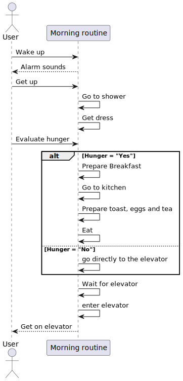

Introduction
This book presents the design and implementation of a Programmable Logic Controller (PLC) program using Structured Text (ST). The assignment required the development of a PLC program based on a self-chosen process, with the flexibility to translate a personal routine into code. In my case the process that i chose was the illuminating of my hallway
The PLC program consists of two independently running tasks, a function invoked by at least one task, and a Global Variable List (GVL) utilized for communication between the tasks. To ensure proper understanding and verification of the design, supporting documentation is provided using GIT version control, including a state diagram for each task, a sequence diagram illustrating the interaction between the tasks, and a sequence diagram showing the function call by one of the tasks.
This book will guide the reader through the development of the creative process behind the program in PLC, detailing the design.
State diagram
As part of this assignment, we were tasked with creating two state diagrams based on our daily routines. I chose to focus on the two routines that occur most frequently in my life. The first diagram outlines the process of having breakfast in the morning, while the second diagram represents the routine I follow after breakfast as I head to the university. These diagrams provide a clear breakdown of the different states and transitions within these daily activities.
First state diagram: Breakfast
My first task focuses on my morning routine when I get up take a shower and have breakfast. Typically, I eat bread with something and drink tea, so I will create a state diagram based on this. The process includes waking up, getting out of bed, taking a shower, and then having breakfast.
Second state diagram: Going to university
The second task represents my routine after finishing breakfast and heading to the university. This state diagram outlines the process by taking the elevator, and then walking to the university.
Sequence Diagram
In this section, I will present and explain two sequence diagrams representing my daily routine. The first diagram illustrates the communication and flow between tasks, showing how one task leads to the next. The second diagram focuses on how each task calls specific functions to complete the overall process. These diagrams provide a detailed view of how my routine operates both in terms of task interaction and function execution.
First sequence diagram: Comunication between tasks
For the first sequence diagram, I will explain the interactions between my tasks. For instance, after finishing breakfast, I immediately start preparing my things for the university. This diagram will illustrate how these tasks communicate and transition from one to the next.

Second sequence diagram: Calling the function
For the second sequence diagram, I will demonstrate how my tasks call specific functions to complete the process. For example, when having breakfast, I need to call a function "Prepare breakfast",heading to the university, I call functions like "Wait for the elevator"
PLC Program
explanation of how code works
-insert code
explanation of anything
Conclusion
-Put a conclusion about the complete process about the daily routine and create a book with all the info